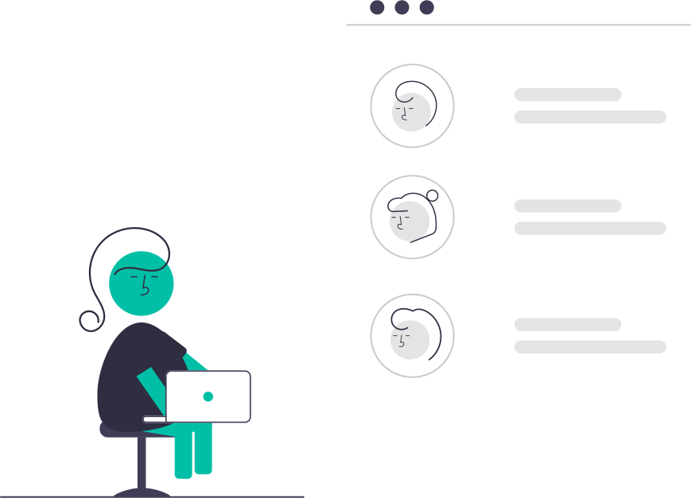
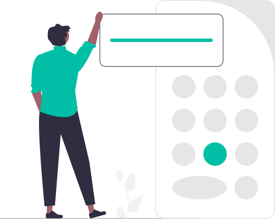

Projetos
Conheça meus projetos
-
PDV
O sistema PDV (Ponto de Venda) desenvolvido em Java é uma solução abrangente para o gerenciamento eficiente de restaurantes. Ao utilizar conceitos fundamentais de Programação Orientada a Objetos (POO), como encapsulamento e herança, o sistema se beneficia de uma estrutura modular e organizada, o que facilita a manutenção e a extensibilidade do código. Através de uma interface bem projetada, os funcionários do restaurante podem registrar pedidos, controlar estoque, gerenciar informações de clientes e realizar outras tarefas relacionadas ao negócio. O sistema PDV também pode oferecer recursos como geração de relatórios detalhados de vendas, controle de caixa, gerenciamento de funcionários e controle de acesso. Esses recursos fornecem informações valiosas para a gestão do restaurante, permitindo análises precisas do desempenho do negócio e auxiliando na tomada de decisões estratégicas.
-

Agenda de Contatos
No início do curso de lógica de programação, foi desenvolvida uma agenda de contatos utilizando a linguagem C. Nesse projeto, foram aplicados conceitos básicos, como o uso de vetores para armazenar os dados dos contatos. Foram utilizadas estruturas de decisão para tomar ações com base nas opções escolhidas pelo usuário, permitindo adicionar, excluir e buscar contatos na agenda. Além disso, foram implementadas estruturas de repetição para facilitar a iteração sobre os contatos e realizar operações em massa, como listar todos os contatos.
-

Calculadora
A calculadora foi desenvolvida em Java, utilizando uma série de conceitos fundamentais de programação. Durante o processo de criação, foram aplicados princípios de encapsulamento, criação de classes e objetos, modularização e utilização de bibliotecas para a implementação da interface gráfica. Além disso, foram incorporadas estruturas de dados como o ArrayList para armazenar e manipular os dados da calculadora de forma eficiente. Também foram implementados formatadores para exibir os resultados de maneira adequada e tratamento de erros para lidar com possíveis entradas inválidas ou exceções durante as operações da calculadora.
-

Conversor de moedas
O conversor de moedas foi desenvolvido em Java, aplicando conceitos como encapsulamento, criação de classes e objetos, juntamente com o uso de bibliotecas para a implementação da interface gráfica. Durante o processo de criação, foram utilizadas estruturas de dados como o ArrayList para manipular e armazenar informações relevantes. Também foram implementados mecanismos de tratamento de erros para lidar com possíveis exceções durante as operações do conversor. Além disso, o conversor de moedas integra-se com a API de conversão de moedas da AwesomeAPI. Para lidar com o formato de dados retornado pela API, foi utilizado o Gson para tratar os objetos em formato JSON. Essa integração permite que o conversor obtenha as taxas de câmbio atualizadas e forneça uma conversão precisa entre diferentes moedas.
-
Clone nubank
O clone Nubank foi desenvolvido utilizando apenas HTML e CSS, e consiste em uma versão similar à página inicial da Nubank para desktop. Por meio do HTML, foram estruturados os elementos da página, como cabeçalho, seções, imagens e formulários. O CSS foi utilizado para estilizar e posicionar os elementos, proporcionando um layout semelhante ao da Nubank. Embora seja uma versão simplificada, o clone Nubank pode apresentar características visuais e elementos interativos semelhantes à página original, permitindo aos usuários experimentar uma experiência similar ao acessar a página inicial da Nubank em um ambiente desktop.
-
Página de negócio
A página de negócio foi desenvolvida utilizando HTML e CSS e representa um negócio fictício. No desenvolvimento da página, foram utilizados os recursos do HTML para estruturar o conteúdo, incluindo cabeçalhos, parágrafos, listas e imagens. O CSS foi aplicado para estilizar e posicionar os elementos, proporcionando um design personalizado e atraente.
-
Formulário
O formulário foi desenvolvido utilizando HTML e CSS e tem como objetivo receber informações básicas dos usuários. Através do HTML, foram criados os campos necessários para coletar as informações desejadas, como nome, e-mail, telefone, entre outros. O CSS foi aplicado para estilizar o formulário, deixando-o visualmente atraente e organizado.
-
Barbearia Alura
A página da Barbearia Alura foi desenvolvida utilizando HTML e CSS como uma das primeiras atividades. Ela representa uma barbearia simples, criada como exercício para praticar os conceitos básicos dessas tecnologias.No desenvolvimento da página, foram utilizados os recursos do HTML para estruturar o conteúdo, incluindo cabeçalhos, parágrafos, imagens e links. O CSS foi aplicado para estilizar os elementos, definindo cores, fontes, tamanhos e layout.